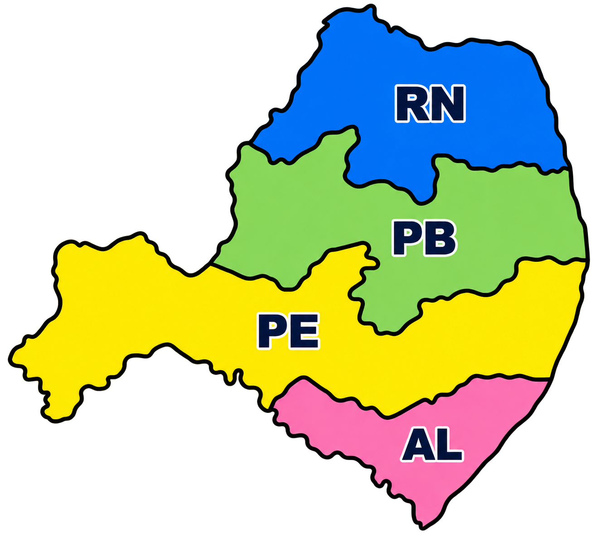

Estrutura Diocesana
GEDs do Nordeste 2
Clique em um estado para conhecer os Grupos Executivos Diocesanos e suas coordenações.
Mapa interativo
Nordeste 2

Selecione AL, PB, PE ou RN.
Coordenações
Alagoas
Carregando...